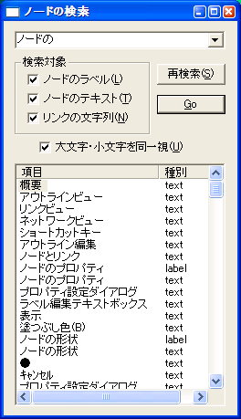

メニューから「編集」⇒「検索」あるいはショートカットキー(Ctrl+F)で検索ダイアログを起動できます。ノードのラベル、テキストリンクのコメントなどあらゆるテキスト要素からインクリメンタルサーチが可能です。検索結果をダブルクリックすることで該当のノードにジャンプします。

テキストビューで検索ダイアログを呼び出すと、テキスト内のみに限定した検索ダイアログが表示されます。また置換を行うことも可能です。